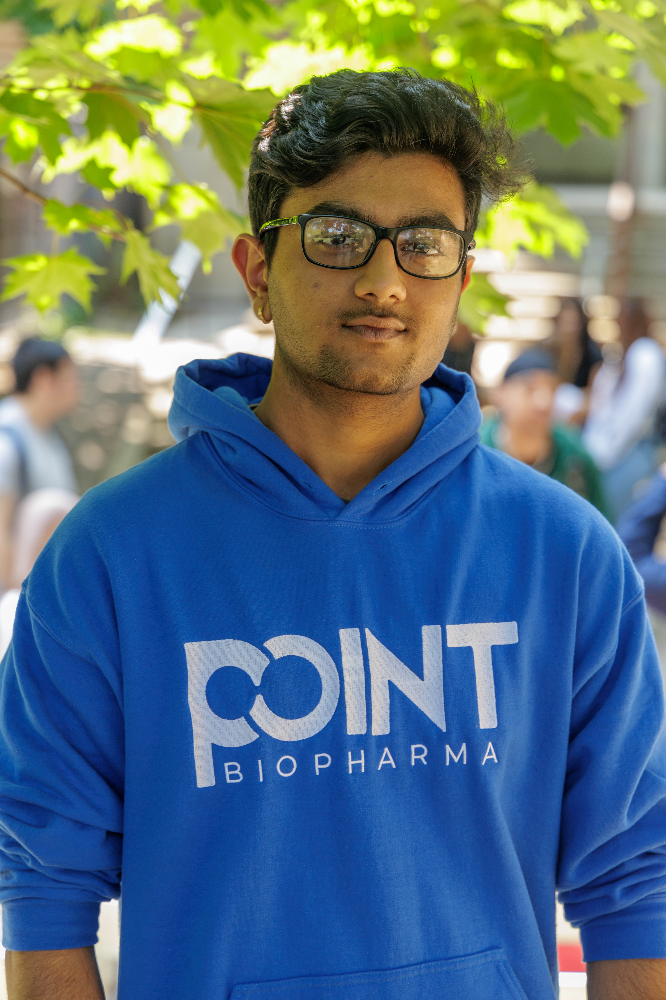
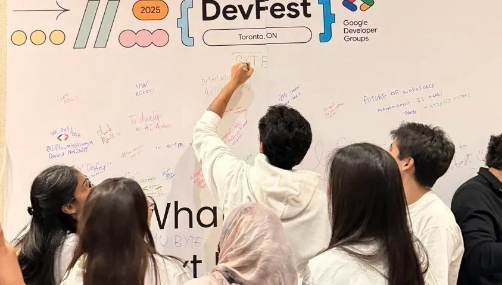
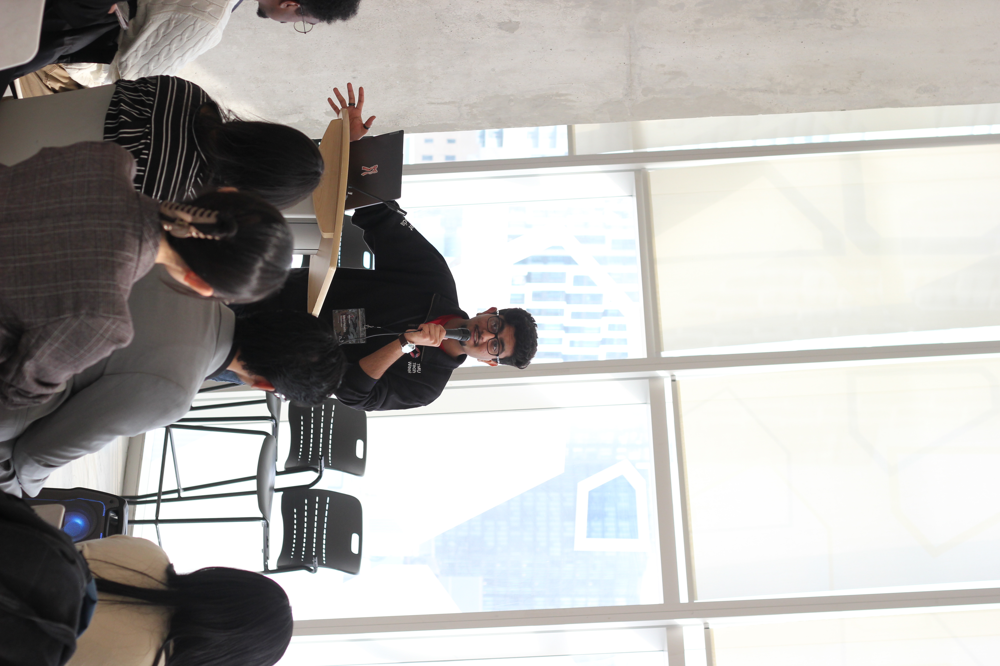

Software Engineer · AI Builder · Founder
I build systems that think — driven by questions only humans can ask.
Experience
Projects
Stack
The Human

"Software is just the medium.
The question is always: what am I actually building this for?"
— How I approach every project

